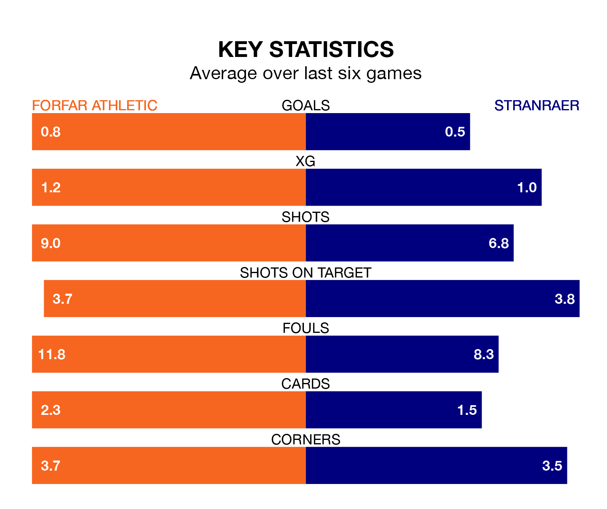

Stranraer travel to Station Park looking to secure a first win in eight League Two games against Forfar Athletic on Saturday.
Stranraer have lost four and drawn three matches since they last earned three points – against Dumbarton on March 5.
They face a Forfar side who have won two and drawn two over that time.
With Marc McCallum between the sticks, Forfar can rely on one of the league's safest pair of hands. He has kept 10 clean sheets in his 34 appearances this season, and only one other 'keeper – Stenhousemuir's Darren Jamieson – has been able to prevent the opposition scoring on more occasions in League Two.
In Stranraer's net, Lewis Budinauckas has seven clean sheets in 27 games. He has conceded a goal every 68 minutes, 10% more often than the 77 minutes between goals for McCallum.
The away team are ninth in the table after 34 games, of which they have won eight and drawn nine, earning 33 points.
Athletic are three places ahead of Stranraer in sixth, with eight wins and 15 draws putting them on 39 points.
In the last 10 years, Forfar and Stranraer have played each other on 32 occasions. Forfar won 12 of them, Stranraer nine, and they drew 11 times.
On average, the Loons scored 1.3 goals and Stranraer 1.1 in those matches.
Their last meeting was on March 2, when they played out a 0-0 draw.
With 36 goals in 34 games so far this season, the Loons are the league's joint-third-lowest scorers with 1.1 goals per game. But they are conceding fewer than average too, letting in 41 goals at a rate of 1.2 per game.
Stranraer are also below average scorers, with 1.1 goals per game, compared to a league average of 1.3. They have conceded 1.5 goals per game.
Forfar's last match was on April 20, a 2-1 win against East Fife, with Russell McLean getting the goals for the Loons.
Stranraer drew 0-0 with Dumbarton last time out, also on April 20.
Updated: 07:59 (UTC), 26/04/24